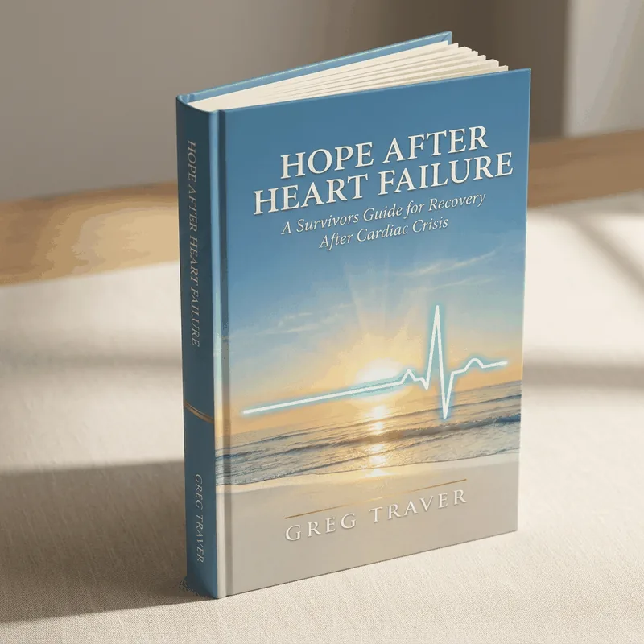

A Survivor's Guide for Recovery After Cardiac Crisis
Because surviving is just the beginning.
“Just when you think that your Life has Shattered,
A New Life Has Begun.”
Why This Book
Greg R. Traver survived three "widow-maker" heart attacks and two separate heart failure episodes, including roughly three weeks intubated in an intensive care unit. This is his real account of the recovery that followed — not a fictional or illustrative example.
“Doctors can do great things, but they can't tell you how to live with what comes after.” — Greg Traver